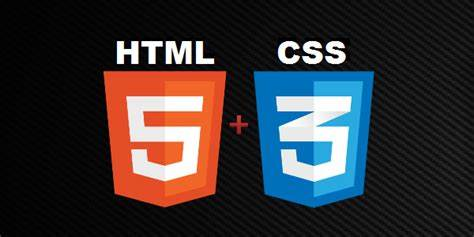

 HTML adalah singkatan dari Hypertext Markup Language, HTML merupakan salah satu bahasa pengkodean atau pemograman yang digunakan untuk membuat halaman website yang ditampilkan pada web browser. Sebagian besar halaman yang kamu temukan pada internet kebanyakan menggunakan Bahasa HTML
HTML diciptakan oleh Sir Tim Berners-lee pada akhir tahun 1991 namun tidak dirilis secara resmi. Sir Tim Berners-lee merilis HTML versi pertama pada tahun 1993 dengan tujuan untuk berbagi informasi yang dapat dibaca dan diakses melalui web browser. Hingga saat ini versi HTML sudah mencapai versi 5 yang dirilis pada tahun 2012, Versi HTML 5 ini merupakan terusan dari perpanjangan versi HTML 4.01 yang sebelumnya digunakan oleh kebanyakan orang.
CSS adalah bahasa Cascading Style Sheet dan biasanya digunakan untuk mengatur tampilan elemen yang tertulis dalam bahasa markup, seperti HTML. CSS berfungsi untuk memisahkan konten dari tampilan visualnya di situs.
CSS dibuat dan dikembangkan oleh W3C (World Wide Web Consortium) pada tahun 1996 untuk alasan yang sederhana. Dulu HTML tidak dilengkapi dengan tags yang berfungsi untuk memformat halaman. Anda hanya perlu menulis markup untuk situs.